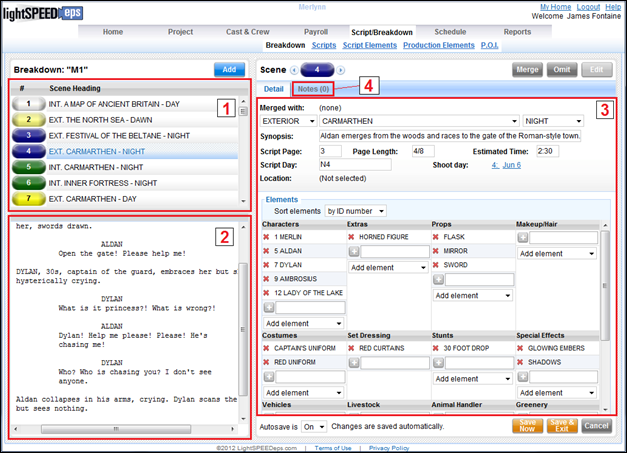
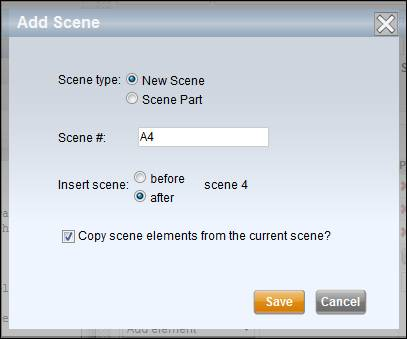
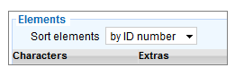

The Scene Breakdown
screen, or the Breakdown Page, displays the following information:
Breakdown Page

1.
Scene
List
2.
Script
Pages, if script text has been loaded
3.
Scene
Breakdown with Element List
4.
Scene
Notes
On the upper left
side of the Breakdown Page is the Scene List.
Each scene is identified with a scene number or label and is color coded
based on the scene header's INT/EXT and DAY/NIGHT values. Industry standard colors are used. The most common colors are listed below:
·
INT.
DAY: White
·
INT.
NIGHT: Green
·
EXT.
DAY: Yellow
·
EXT.
NIGHT: Blue
Select a scene from
the list to view its details.
Due to the way in which most scripts are imported - via our automatic import process - we do not recommend adding scenes manually. If a new script revision contains new scenes it is recommended that you import the new script and allow Lightspeed to add the revision and the new scenes to the scene list. Importing the new script will also enable Lightspeed to track page level changes and display the appropriate page colors.
However, we offer the ability to manually add scenes to the scene list so that you have complete control of the contents of your scene list. Manually adding a scene is recommended under the following circumstances:
· The script was originally manually input into Lightspeed
· You wish to add a "scene part" to the scene list
· You have a scene which is being shot by two separate units and you wish to place the scene on each unit's strip board
Note: When you manually add a new scene you may insert the scene before or after the current scene.
Add Scene Popup

Use the following steps to manually add a scene to your scene list.
1. Select the Add button above the scene list.
The Add Scene popup window appears.
2. Select whether you want to add a new scene or new scene part.
3. Enter a number or alphanumeric code for the scene.
4. Select whether to add the scene before or after the current scene.
5. Select whether or not to copy script elements from the current (the currently displayed) scene.
6. Click on the Save button to create the scene.
If script text was imported with your script, then the pages from the currently selected scene are visible below the scene list. To view the pages from a different scene, select that scene from the scene list.
Select a scene from the list to view its breakdown on the right.
The scene detail screen on the right contains two mini-tabs: Detail and Notes. The Detail mini-tab displays the breakdown detail for the scene and the Notes mini-tab allows users to create and share notes regarding the scene.
The Detail mini-tab displays the breakdown details of the scene including the scene header, synopsis, script page, page length, and script day. The Element Table displays a categorized list of all of the script elements contained in the scene.
The Notes screen displays text comments and notes that people have posted about the scene. These notes can be about anything related to the scene such as a request for special equipment or a comment on the shot list.
Select the Edit button in the upper right corner
of the screen to edit the current scene.
The breakdown page screen switches to edit mode. While in edit mode, you can make changes to
the scene's information.
You may choose to view elements in the table sorted alphabetically or by Element ID number. Use the Sort Elements dropdown to make your choice.
Sort Elements Dropdown

Editing the Element Table
1. Within the Element Table, locate the category of the element you want to add.
2. If the element does not already exist, input the element name into the empty field next to the plus symbol in the applicable element category.
You may also copy and paste an element name from the script text on the left hand side.
3. If the element already exists (if it has already been added to other scenes) then click on the Add Element dropdown in the element category and select the desired element from the dropdown list.
Note: You can search for an element by typing part of the element's name into the empty field next to the plus symbol.
1. Locate the element in the element table and click on the red x next to the element's name.
Note: When you remove an element from a scene's breakdown you are not removing the element from the database. The element remains in the element list and can be added back to the scene at any time.
1. Select the Notes mini-tab.
2. Enter your comment or note into the scene note field at the bottom of the screen.
3. Click on the Add Note button.
Your note is added to the screen with your name and timestamp.
4. Select Save to save the note. If you select Cancel your note will be discarded.
Changes made to the Breakdown Page are saved automatically when you exit the current Breakdown screen. However, you may save any pending changes immediately by using either the Save Now or the Save & Exit buttons.
Save Now saves all changes and leaves you in edit mode.
Save & Exit saves all changed and returns you to read-only mode.
Cancel discards any unsaved changes.
In addition to editing individual scenes you can also manage your scenes by merging, splitting, or omitting them. These features are described below.
The Merge function is used to place multiple scenes on a single breakdown page and, subsequently, on a single strip board strip.
When scenes are merged the following rules apply:
· The merged scenes share a common breakdown page and strip
· The merged scenes share the same table of elements
· The merged scenes share the same scene notes
· Each scene retains its individual scene number
· Each scene retains its individual scene header
· Each scene retains its place in the scene list
· Merged scenes do not combine to form a single scene entry in the scene list
Use the following steps to merge one or more scenes:
1. Select one of the scenes that you wish to merge.
We’ll refer to this scene as the host scene.
2. Click on the Merge button in the upper right part of the screen.
The Select Scene to Merge with Scene popup window appears.
3. Select a scene from the list.
We’ll refer to this scene as the selected scene.
4. Click on the Merge button.
The popup closes and the host scene is merged with the selected scene.
Note: You can merge a host scene with multiple selected scenes.
The
Use the following steps to split merged scenes:
1. Select a scene that is merged with one or more other scenes.
2.
Click on the
The Split Scene popup window appears.
3.
Confirm that you want to split the scene from
the merged set of scenes by clicking on the
The scene is removed from the merged set.
Note: When a scene is split away from a merged set, the scene is given its own strip on the strip board. This new strip is placed in the Unscheduled section of the strip board.
When script pages are locked and a scene is removed from the shooting schedule, that scene is omitted. Omitting a scene removes it from the strip board (the scene is placed in the strip board’s Boneyard) and schedule but keeps the scene in the scene list. Omitted scenes are represented in red.
If you omit a scene that is currently merged with other scenes, the omitted scene is removed from the merged set of scenes and placed on its own strip. That strip is then put into the Boneyard.
Use the following steps to omit a scene:
1. Select the scene that you want to omit.
2. Click on the Omit button in the upper right.
The Omit Scene popup window prompts you to confirm.
3. Click on the Omit button.
The scene is omitted and its strip is placed in the Boneyard.
Omitted scenes may be restored. When you restore a scene it is restored to its prior color and its strip is moved from the Boneyard to the list of Unscheduled strips.
Use the following steps to restore an omitted scene:
1. Select the omitted scene.
2. Click on the Restore button in the upper right.
The Restore Scene popup window prompts you to confirm.
3. Click on the Restore button.
The scene is restored.
Omitted scenes may be deleted. Deleting an omitted scene permanently removes it from the scene list and the strip board. We do not recommend deleting a scene after script revisions have been locked.
Use the following steps to delete an omitted scene:
1. Select the omitted scene you want to delete.
2. Click on the Delete button in the upper right.
The Delete Scene popup window prompts you to confirm.
3. Click on the Delete button to confirm.
The scene is deleted from the system.
Warning: Once a scene has been deleted, it cannot be restored.
Related Topics